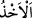
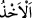
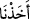
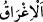

anlaşıldığına göre, bâzısını cezâlandırıp bazısını terketmedik.
Bazıları demiştir ki: “ kelimesinin asıl anlamı, el ile almak ve tutmaktır. Sonra
istiâre yoluyla başka yerlerde de kullanılmıştır. Meselâ, “Kabul ettiniz ve bu ahdimi
yüklendiniz mi?” (Ali İmran, 3/81) âyetinde “kabul etmek” mânâsına gelir. Yani,
ahdimi kabul ettiniz mi? demektir. Ve yine yukarıdaki âyette olduğu gibi “azab etmek”
mânâsına da gelir.
el-Müfredât’ta der ki: “ kelimesi, bir şeyi almak ve onu elde etmek demektir. Bu,
“Eşyamızı yanında bulduğumuz kimseden başkasını almaktan Allah’a sığınırız.”
(Yusuf, 12/79) âyetinde olduğu gibi bazan el ile uzanarak olur. Bazan de “Kendisini ne
bir uyuklama, ne de uyku tutmaz” (el-Bakara, 2/255) âyetinde olduğu gibi üstünlük ve
galebe ile olur.
Sıtma hastalığına tutulana: “Sıtma hastalığı onu yakaladı”; esire de “yakalanmış-
tutulmuş” mânâsına gelen “me’hûz” veya “ehîz” denilir.
el-Es’iletü’l-müfhıme’de der ki: “Onlardan her birini günahı sebebiyle
cezâlandırdık” ayeti, Allah Teâlâ’nın, bir kimseyi ancak günahından dolayı
cezâlandırdığına delâlet eder. Onlar ise şöyle derler: Şayet Allah Teâlâ daha baştan
(sebepsiz olarak) cezâlandırsaydı, bu da O’nun hakkında câiz olurdu. Cevaben deriz ki:
Biz, Allah Teâlâ’nın, kâfirleri küfürleri; günâhkarları da günahları yüzünden
cezâlandırdığını inkâr etmiyoruz. Burada söz, şayet Allah Teâlâ daha baştan (herhangi
bir sebep olmadan) cezâlandırsaydı zâlim olmazdı. Çünkü O, mutlak melik hükmüyle
dilediğini yapar.
Onlardan “kiminin üzerine taşlar savuran rüzgârlar gönderdik,”
Bu cümle, “ (cezâlandırdık)” cümlesinin tafsilidir. Yani, içinde küçük taşlar
taşıyan şiddetli bir rüzgar, kasırga gönderdik, demektir. Bunlar, Âd kavmidir. Yahudda
onlara taşlar atan melek gönderdik, demektir; bunlar da Lût kavmidir.
Onlardan “kimini korkunç bir ses yakaladı,”
Bunlar Medyen ve Semûd kavimleridir. Cebrail (a.s.) şiddetli ve korkunç bir sayha
üfürdü; bundan dolayı kalbleri parçalandı ve canları çıktı. Bir ses kuşattı onları ve
ödleri patladı.
“Kimini yerin dibine geçirdik,”
“Yerin dibine geçirdik” cümlesindeki “ (bâ)” harf-i cerri, ta’dîye içindir; fiile
geçişlilik mânâsı kazandırır. Yere batırılma cezâsı, amellerine uygun bir cezâdır. Çünkü
çok mal, çoğu defa yerin altına konulur.
“Kimini de suda boğduk.”
“, batırmak, suda boğmak; “ ise suyun dibine çökmek ve inmek demektir.
“Allah onlara zulmetmiyor,” yâni cezâyı, mahal olmayan yere koyarak onlara
zulmetmemiştir. Çünkü böyle bir muamele, Allah Teâlâ hakkında muhâldir;
peygamberler göndermek suretiyle de bu apaçık ortaya çıkmıştır.
“Asıl onlar kendilerine zulmediyorlardı.” Yani, küfür ve günahlarda ısrar ediyorlar;